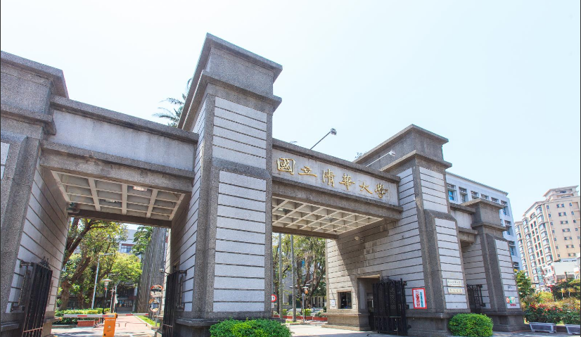

清華大學 教育心理與諮商學系
臺北市立萬芳高級中學 周鈺傑
圖片來源：國立清華大學｜面試｜
一人十五分鐘
面試題目
1. 一張紙放桌上，看完題目開始（自我介紹、申請動機、時間規劃共3分鐘）
2. 你的跨域才能如何跟心理諮商學系結合?
3. 有沒有報考其他學校的特殊選才?
4. 畢業後未來希望如何發展?
5. 工商心理與考取諮商師，沒有太大關聯，且需求程度不同，是否太廣泛?
你要如何達成?【Ps: 工商心理不需要考心理諮商師執照，所以這兩個走向有點不同】
6. 介紹一下你的CoS X LaB團隊，活動時間、內容、有沒有其他老師協助?
7. 你是三類組，為何選擇教育諮商偏社會組的科系?
8. 你高二成績下降，原因為何?
9. 進入大學之後規劃? （前面一位教授問過，另外一位教授又問一次）
10. 有沒有其他問題想要問的?
面試心得
清大與臺大相比面試較為嚴肅，共三位教授，整場面試都無表情變化，有點類似扮黑臉(?)，但這應該都是教授們事先故意扮的，測試考生反應能力與應變能力，這時就正常發揮，當作聊天輕鬆回答問題即可，不需要太過緊張。
有一張紙貼在我的座位桌上，看完後回答上面題目（題目如上第一點）。 清大面試問題較針對個人廣度與深度（備審資料內容占絕大多數），以及在校成績與個人未來時間規劃（這應該是特殊選才都會問到的，畢竟若錄取則多出幾個月的時間，因此時間規劃非常重要）。
整體面試感覺較臺大嚴肅和拘謹，而這個應該也是教授們事先設計的，如同簡章上寫的測試考生反應能力及表達能力，但不管面試環境如何，最重要的就是保持平常心，不要受環境或教授反應干擾，自然的去發揮自己所準備的和自身特質。
特殊選才畢竟是多一個管道，然而在準備特選時也同時要兼顧學測，因此這段時間學習時間分配和規劃是很重要的。
也預祝看到這篇文的考生們都能進入你們心中的第一志願！